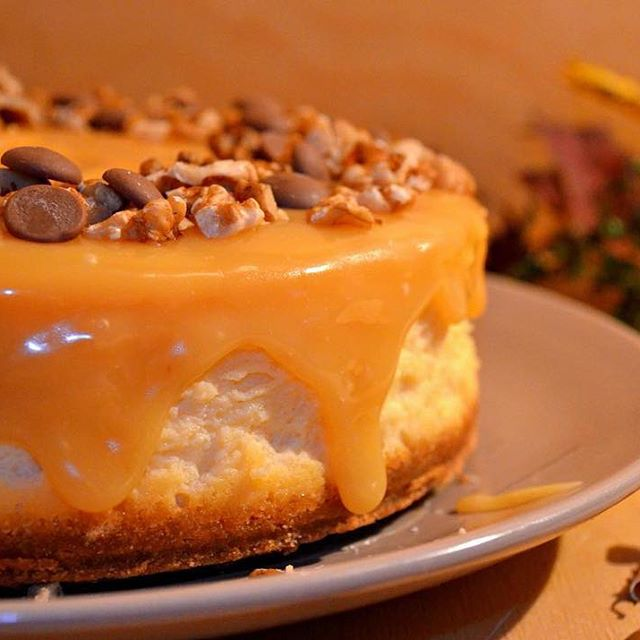

Карамельный чизкейк
Юлия Васильева | Среда, 15 июля 2015

Шаг 1.
Раскрошить печенье в крошку, смешать с мягким сливочным маслом, с 1/3 стакана сахарной пудры и солью.
Выложить дно и бока высокой формы диаметром 18-20 см и утрамбовать крошку.
Выпекать при t 220 градусов 10 мин.
Шаг 2.
В это время смешать сливочный сыр комнатной температуры с 1/2 стакана сахарной пудры и ванильным экстрактом, добавить карамель.
Если карамель слишком густая, немного нагреть, чтоб она стала более жидкой, но не горячей.
Добавить к сырной смеси яйца и желток по одному, каждый раз хорошо помешивая, но не взбивая.
Всыпать муку и цедру. Вылить в форму сливочную начинку. Поставить в разогретую до 220 градусов духовку, выпекать 15 мин.
Затем уменьшить t до 160 градусов и выпекать еще 30-40 мин. Желательно поставить на дно духовки емкость с водой.
Проверить готовность чизкейка слегка постучав по форме, серединка должна слегка подрагивать, а край нет.
Оставить чизкейк в духовке с приоткрытой дверцей на несколько часов.
Через полчаса после этого можно провести острым и тонким ножом по краю формы, отделяя чизкейк от нее.
Вернуть чизкейк в духовку. Через 1,5 часа достать чизкейк вместе с формой и залить верх карамельным соусом
и поставить в холодильник минимум на 6 часов, лучше на ночь.
Капкейки с творожным кремом
Татьяна Онегина | 8 сентярбя 2014

Шаг 1.
Все ингредиенты должны быть комнатной температуры — это важно! Разогреть духовку до 170 С°. В форму для кексов положить бумажные формы.
В миску миксера положить масло комнатной температуры и сахар. Взбить всё на высокой скорости (примерно 6 мин.) до легкой и пушистой консистенции.
Шаг 2.
Добавить яйца, по одному за раз, взбивая несколько минут после каждого добавления. Добавить ванильный сахар.
В отдельной миске смешать вместе муку, разрыхлитель и соль.
По желанию можно добавить цедру. Теперь на низкой скорости, поочередно добавить смесь муки и молока, в три этапа, начиная и заканчивая мукой.
Шаг 2.
Лопаткой собрать тесто со стенок миски по мере необходимости, и снова перемешать миксером на низкой скорости.
Тесто для капкейков должно быть похоже на густую сметану. Равномерно заполнить тестом подготовленные формочки и выпекать в течение примерно 18 — 22 минут.
Проверить на готовность можно зубочисткой. Вытащить из духовки и положить на решетку до полного остывания
Торт пикник
Мария Белая | 3 июля 2017

Шаг 1.
Крем, как и бисквит, надо готовить заранее. Так как ночь он должен постоять в холодильнике, только так он примет правильную структуру.
Крем готовится на водяной бане, ставим кастрюльку с водой на плиту, в другой емкости смешаем сметану, сахар, муку, яйцо, ванилин.
Как только вода закипит ставим на эту кастрюлю сверху нашу мисочку с ингредиентами.Постоянно помешивая доводим крем до загустения.
Время приготовления зависит только от жирности вашей сметаны, чем она жирнее, тем крем быстрее схватится.
У многих возникает вопрос, можно ли приготовить этот крем с жирностью сметаны чуть ниже 20%? Ответ — можно!
Будучи в Вологде, я готовила этот крем из сметаны местного производства, жирность её 18%, крем получился отличный.
Из какой сметаны крем не получается? Из суррогата, то есть из сметанного продукта! Внимательно смотрите на этикетку, в составе не должно быть растительных жиров!
Пока крем загустевает, порубим наш шоколад. Я для этого торта выбрала шоколад с миндалём и кокосом.
Но, каких то супер улучшений от этого не заметила, так что в следующий раз выберу просто белый шоколад без добавок.
Как только крем загустел, снимаем миску с водяной бани. Добавляем туда рубленный шоколад и кокосовую стружку. Всё перемешиваем, охлаждаем до комнатной температуры.
Масло комнатной температуры взбиваем до побеления и увеличения в массе.
По ложке добавляем остывший ! крем не переставая взбивать. Так взбиваем всю нашу массу.Далее крем убираем в холодильник на ночь, на стабилизацию.
С утра получаем очень плотную консистенцию. Наш крем готов.
Шаг 2.
В это время смешать сливочный сыр комнатной температуры с 1/2 стакана сахарной пудры и ванильным экстрактом, добавить карамель.
Если карамель слишком густая, немного нагреть, чтоб она стала более жидкой, но не горячей.
Добавить к сырной смеси яйца и желток по одному, каждый раз хорошо помешивая, но не взбивая.
Всыпать муку и цедру. Вылить в форму сливочную начинку. Поставить в разогретую до 220 градусов духовку, выпекать 15 мин.
Затем уменьшить t до 160 градусов и выпекать еще 30-40 мин. Желательно поставить на дно духовки емкость с водой.
Проверить готовность чизкейка слегка постучав по форме, серединка должна слегка подрагивать, а край нет.
Оставить чизкейк в духовке с приоткрытой дверцей на несколько часов.
Через полчаса после этого можно провести острым и тонким ножом по краю формы, отделяя чизкейк от нее.
Вернуть чизкейк в духовку. Через 1,5 часа достать чизкейк вместе с формой и залить верх карамельным соусом
и поставить в холодильник минимум на 6 часов, лучше на ночь.